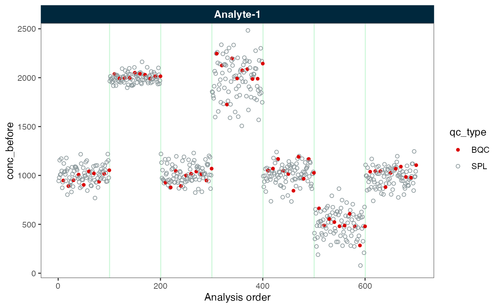
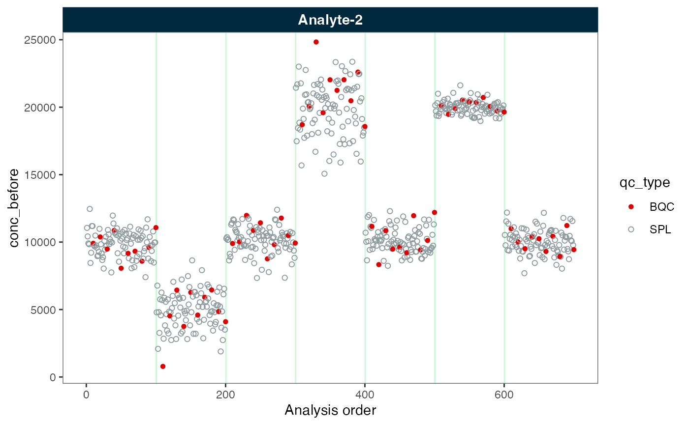
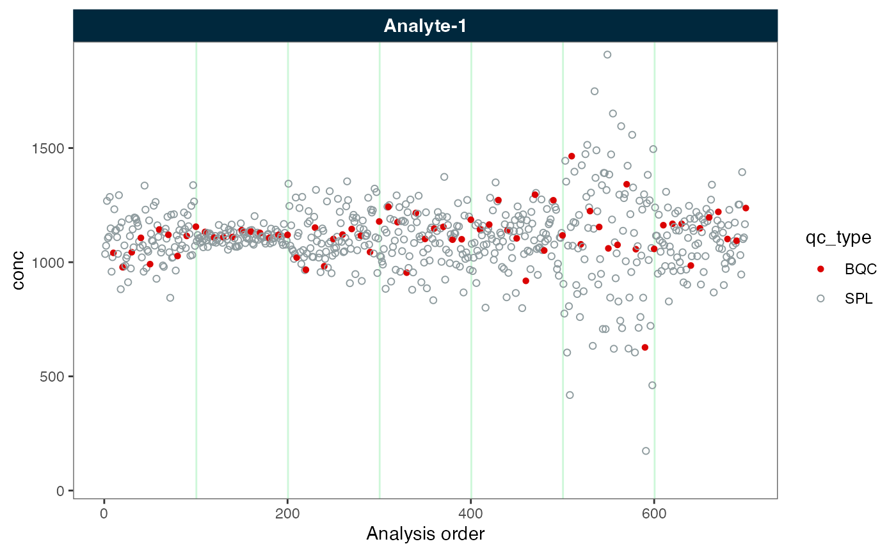
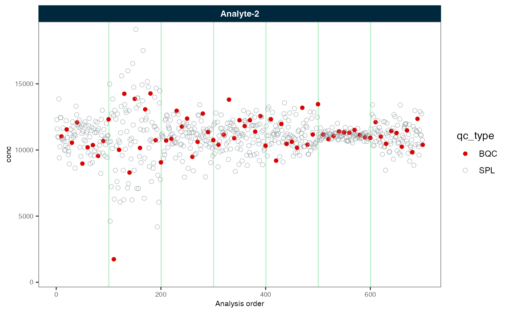
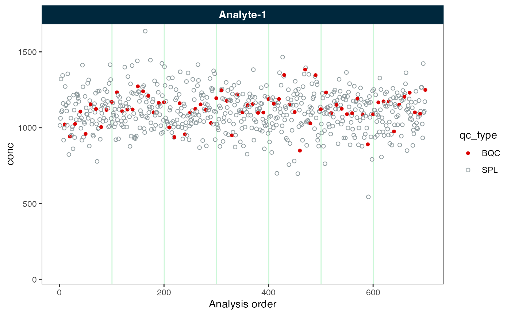
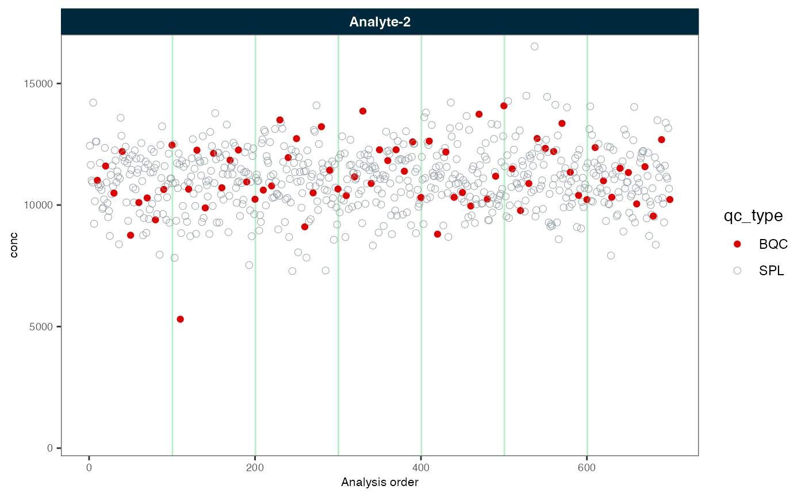
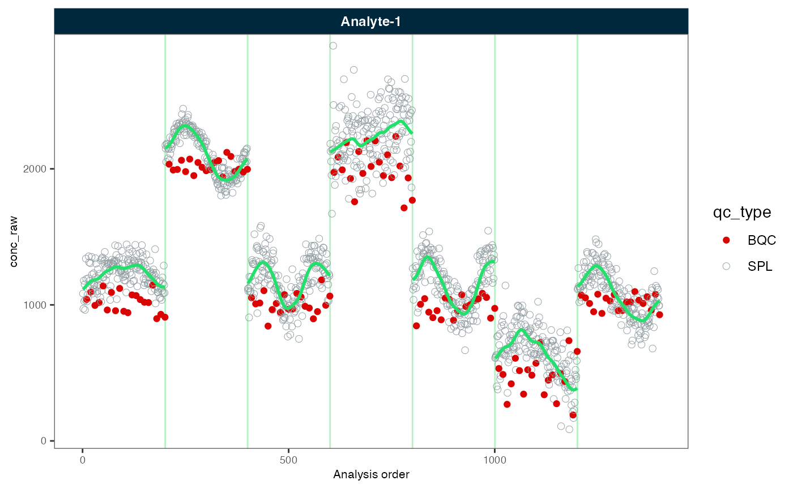
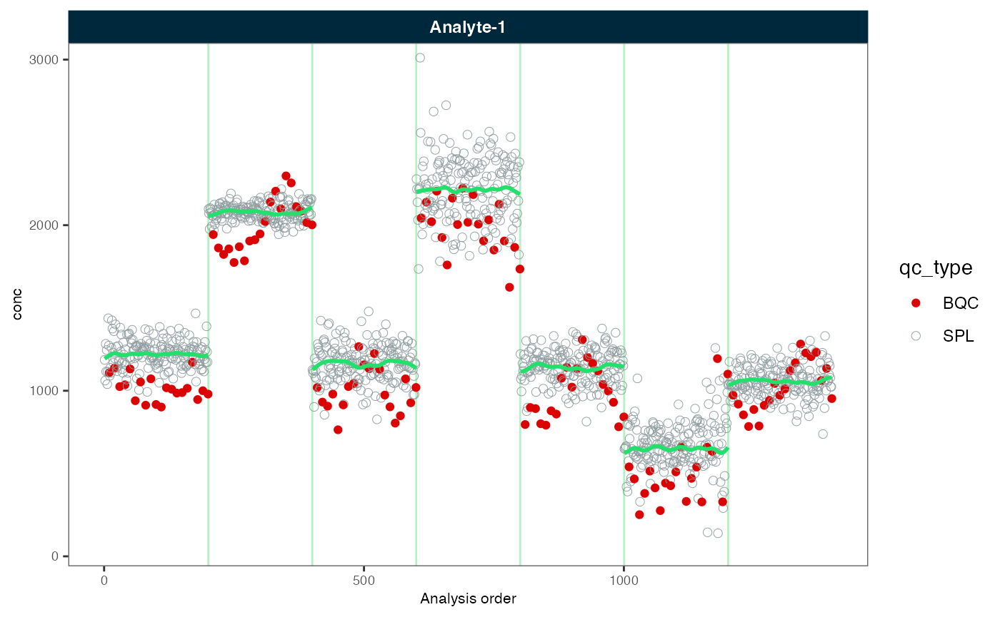
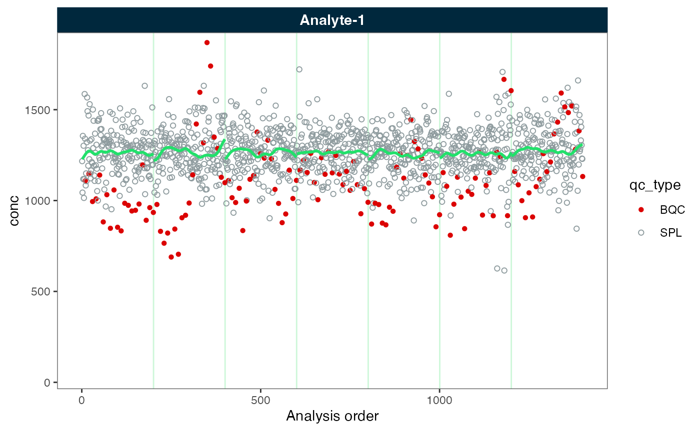

First, we start with loading {midar} package and importing the data.
library(midar)
myexp <- midar::MidarExperiment()
myexp <- import_data_csv(
data = midar::MidarExperiment(),
path = "batch_effect-simdata-u1000-sd100_7batches.csv",
variable_name = "conc",
import_metadata = TRUE)Batch-Centering
# Correct batch effects - Set `correct_scale = TRUE` to scale also variance
myexp <- correct_batch_centering(
data = myexp,
variable = "conc",
reference_qc_types = "SPL",
correct_scale = FALSE)
#> Adding batch correction to `conc` data...
#> ✔ Batch median-centering of 7 batches was applied to raw concentrations of all 2 features.
#> ℹ The median CV of features in the study samples across batches increased by 1.1% (1.1 to 1.1%) to 44.0%.Now let’s plot the data before and after batch correction.
plot_runscatter(myexp, variable = "conc_raw", rows_page = 1, cols_page = 1)
plot_runscatter(myexp, variable = "conc", rows_page = 1, cols_page = 1)
Next, we correct the batch effects again, this time with scaling of variance.
# Correct batch effects - WITH scaling of variance
myexp <- midar::correct_batch_centering(
myexp,
reference_qc_types = "SPL",
variable = "conc",
correct_scale = TRUE)
#> Replacing previous `conc` batch correction...
#> ✔ Batch median-centering of 7 batches was applied to raw concentrations of all 2 features.
#> ℹ The median CV of features in the study samples across batches increased by 1.1% (1.1 to 1.1%) to 44.0%.
plot_runscatter(myexp, variable = "conc", rows_page = 1, cols_page = 1)
Finally, we can export the corrected data using the
save_dataset_csv() function.
Drift Correction and Batch-Centering
# Created a data object
myexp <- midar::MidarExperiment(title = "batch-effects")
# Import a wide CSV file with some metadata
myexp <- import_data_csv(data = myexp,
path = "drift_batch_effect-simdata-u1000-sd100_7batches.csv",
variable_name = "conc",
import_metadata = TRUE)
#> ✔ Imported 1400 analyses with 1 features
#> ℹ `feature_conc` selected as default feature intensity. Modify with `set_intensity_var()`.
#> ✔ Analysis metadata associated with 1400 analyses.
#> ✔ Feature metadata associated with 1 features.
#> ℹ Analysis order was based on sequence of analysis results, as no timestamps were found.
#> Use `set_analysis_order` to define alternative analysis orders.
# Within-batch drift correction (smoothing) based on study samples
myexp <- midar::correct_drift_gaussiankernel(myexp,
variable = "conc",
reference_qc_types = "SPL",
within_batch = TRUE,
kernel_size = 10,
recalc_trend_after = TRUE,show_progress = T)
#> Applying `conc` drift correction...
#> ✔ Drift correction (batch-wise) was applied to raw concentrations of 1 of 1 features.
#> ℹ The median CV of all features in study samples (batch medians) decreased by -5% (-5.0 to -5.0%) to 9.0%.
# Plot before and after batch correction
midar::plot_runscatter(myexp, variable = "conc_raw", rows_page = 1, cols_page = 1,
show_trend = TRUE, show_progress = F)
midar::plot_runscatter(myexp, variable = "conc", rows_page = 1, cols_page = 1,
show_trend = TRUE, show_progress = F)
# Correct between-batch effects (median centering)
myexp <- midar::correct_batch_centering(myexp,
variable = "conc",
reference_qc_types = "SPL",
correct_scale = TRUE)
#> Adding batch correction on top of `conc` drift-correction...
#> ✔ Batch median-centering of 7 batches was applied to drift-corrected concentrations of all 1 features.
#> ℹ The median CV of features in the study samples across batches increased by 0.6% (0.6 to 0.6%) to 39.4%.
#Plot again the fully corrected data
midar::plot_runscatter(myexp, variable = "conc", rows_page = 1, cols_page = 1,
show_trend = TRUE, show_progress = F)
# Save corrected data
midar::save_dataset_csv(myexp,
path = "corrected-data.csv",
variable = "conc",
filter_data = FALSE)
#> ✔ Concentration values of 1400 analyses and 1 features have been exported.